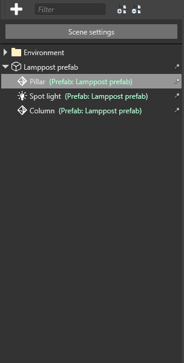

プレハブの使用
中級 プログラマー デザイナー
プレハブをインスタンス化するには、［Asset view］からシーンにプレハブをドラッグ アンド ドロップします。
他のエンティティと同じように、プレハブ インスタンス内のエンティティを再配置できます。
- 子エンティティと親エンティティを作成します
- エンティティをドラッグしてプレハブ インスタンスに追加します
- プレハブ インスタンスからエンティティをドラッグして、独立エンティティにします
プレハブの親エンティティを管理する
既定では、空の親エンティティが、プレハブのエンティティを子として作成されます。エンティティ ツリーでは、子エンティティの横にプレハブの親の名前が緑色で表示されます。

これは、プレハブ エンティティをグループとして管理し、それらの相対的な位置を維持できるので便利です。たとえば、複数のエンティティ (車体、シート、4 つの車輪など) から組み立てられる自動車プレハブがあるものとします。シーン内で自動車を動かすため、自動車のコンポーネント エンティティをグループ化されたままにします。これは、プレハブ親エンティティを動かすことで実現できます。
プレハブで親エンティティを作成したくない場合は、Alt キーを押したままシーンにプレハブをドロップします。これは、プレハブのエンティティの相対的な位置が問題にならず、グループとしてまとめて移動する必要がない場合に便利です。たとえば、複数の木箱エンティティがランダムに配置されたプレハブがあるものとします。配置した後で木箱の相対的な位置が維持されることは重要ではありません。実際、「ランダムに」配置された木箱が同じ重なり方で整理されると、不自然な見た目になります。
| 相対的な位置が維持された場合 | 相対的な位置が無視された場合 |
|---|---|
 |
この場合、親エンティティは必要ありません。代わりに、プレハブの複数のインスタンスを作成した後、個別の木箱エンティティを再配置して必要な効果を作成できます。
プレハブへのリンクを解除する
プレハブ インスタンスを追加した後は、プレハブとその子エンティティの間のリンクを解除できます。つまり、子エンティティはプレハブに対する変更による影響を受けなくなります。
リンクを解除するには、シーン エディターで子エンティティを右クリックし、［Break link to prefab］を選択します。

実行時にプレハブをインスタンス化して追加する
実行時にプレハブを使用するには、コードでプレハブをインスタンス化してからシーンに追加する必要があります。
Note
Instantiate() を呼び出すだけでは、シーンにプレハブ インスタンスを追加するのに十分ではありません。Add() も使用する必要があります。たとえば、プレハブにモデルが含まれる場合、プレハブ インスタンスを追加するまでモデルは表示されません。同様に、プレハブにスクリプトが含まれる場合、プレハブ インスタンスを追加するまでスクリプトは動作しません。
プロジェクトのルート フォルダーに MyBulletPrefab という名前のプレハブがある場合、次のコードでそれをインスタンス化して追加できます。
private void InstantiateBulletPrefab()
{
// "MyBulletPrefab" はプレハブ アセットの名前と場所を参照していることに注意する
var myBulletPrefab = Content.Load<Prefab>("MyBulletPrefab");
// プレハブをインスタンス化する
var instance = myBulletPrefab.Instantiate();
var bullet = instance[0];
// X 座標を変更する
bullet.Transform.Position.X = 20.0f;
// 銃弾をシーンに追加する
SceneSystem.SceneInstance.RootScene.Entities.Add(bullet);
}
Note
実行時に、プレハブ (上の例では myBulletPrefab) を変更しても、既存のプレハブインスタンス (上の例では bullet) に影響はありません。それより後の Instantiate(Prefab) の呼び出しには、新しい変更が含まれます。
たとえば、実行時に木の色を緑から赤に変更するスクリプトを含む木のプレハブがあるものとします。このスクリプトは、プレハブの既存のインスタンスには影響しません。将来のインスタンスの色だけを変更できます。つまり、コードが実行した後でインスタンス化されたプレハブは新しい色になりますが、既存のプレハブの色は変わりません。